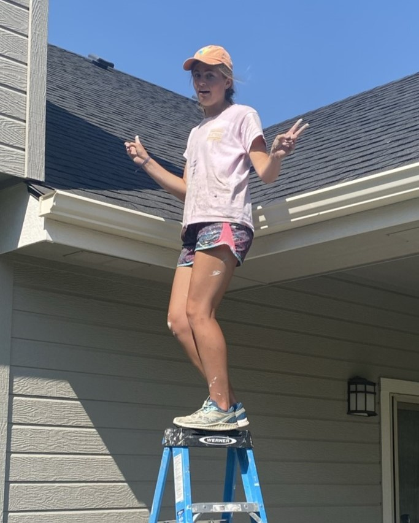

Sarah Hall
|
Hello hello!! My name is Sarah, and I am a co-founder of Rocky Mountain Exterior Painting! My two brothers and I started the business in 2020 during the COVID-19 pandemic. We were trying to find summer jobs with no luck. My dad had been a house painter in college and offered to teach us how to paint with the condition that after our first house, we would run the business all by ourselves. We agreed and have been painting every summer since then. Along with painting the houses, I run the finances of the business. This experience has influenced my decision to study Accounting at Brigham Young University. |
place |
 |